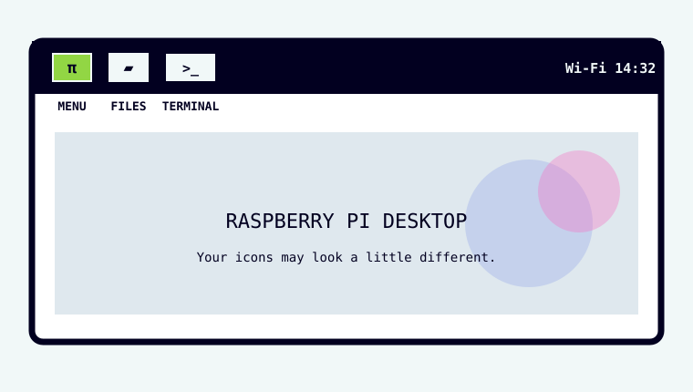

What is on the table?
Today you are going to use the Raspberry Pi as a small desktop computer. Nothing is hidden or assumed.
Meet the Raspberry Pi
Find each part on the real board before moving on:
- 40-pin GPIO header: two long rows of metal pins.
- USB ports: keyboard and mouse can connect here.
- Display connector: HDMI or micro HDMI, depending on model.
- Power connector: USB-C on current full-size models.
- microSD slot: usually underneath the board.
- Camera connector: a thin ribbon-cable socket.
Connect it in this order
- Make sure the Pi is not connected to power.
- Insert the prepared microSD card into the microSD slot. It only fits one way; do not force it.
- Connect the monitor to the Pi with the correct HDMI cable.
- Connect the keyboard to a USB port.
- Connect the mouse to a USB port. If your keyboard/mouse share one wireless USB receiver, connect that receiver instead.
- Turn the monitor on and choose the correct HDMI input if necessary.
- Last: connect the Raspberry Pi power supply.
Wait for the desktop
Starting a computer is called booting. Raspberry Pi OS is the software that starts and runs the Pi. Raspberry Pi OS is based on Linux.
- After connecting power, wait. The first boot can take a little longer than later boots.
- Do not press keys just because text or logos appear. Let the Pi finish.
- When you see a desktop with a taskbar/menu, move the mouse. The pointer should move.
- Press a letter key in a harmless place such as the search field only if your tutor asks you to test the keyboard.
Find the three things we will use

Your desktop may look a little different, but find these three things:
Raspberry Pi menu
The Raspberry Pi icon at the top-left. It opens the application menu.
File Manager
The folder icon. It lets you see and organise files and folders.
Terminal
The little command-window icon. We will explain it before you type anything.
Make your first project folder
First we will make a folder using the mouse. Later we will find the same folder using Terminal.
- Open File Manager by clicking the folder icon on the taskbar. If you cannot see it, open the Raspberry Pi menu → Accessories → File Manager.
- In File Manager, choose your Home folder. This is your personal storage area on the Pi.
- Move the pointer into an empty area of the file list and right-click.
- Choose New Folder.
- Type exactly
pi-projects. - Press Enter.
pi-projects in your Home folder. Double-click it once to prove it opens, then use the Back button to return Home.What is Terminal?
Terminal is a window where you control the same computer by typing short commands instead of clicking icons.
- Click the Terminal icon on the taskbar. If you cannot see it: Raspberry Pi menu → Accessories → Terminal.
- A window opens. You will see a line ending in a symbol such as
$. This is the prompt: the Pi is waiting for you. - Click inside the Terminal window once. The cursor should be ready after the prompt.
Ask: where am I, and what is here?
We will use one command at a time. Read what it means before typing it.
1. pwd = print working directory
In plain English: “Tell me which folder I am in.”
- In Terminal, type
pwd. - Press Enter.
- You should see something beginning with
/home/. The final part is usually your username.
2. ls = list
In plain English: “Show me what is inside this folder.”
- Type
ls. - Press Enter.
- Look for
pi-projectsin the list.
pi-projects. Then return to Terminal and type ls again.Use Terminal to enter the folder
cd means change directory. “Directory” is another word for folder.
- Type
cd pi-projectsand press Enter. - Type
pwdand press Enter. The answer should now end in/pi-projects. - Type
mkdir first-piand press Enter.mkdirmeans make directory. - Type
ls. You should now seefirst-pi. - Type
cd first-pi. - Type
pwdone more time.
pwd should end in /pi-projects/first-pi. Now open File Manager and look inside pi-projects: the same first-pi folder should be there.ls and check the spelling of the folder you are trying to enter. Linux cares about spelling, spaces and capital letters.Open Thonny
Thonny is the program we will use to write and run Python.
- Open the Raspberry Pi menu.
- Choose Programming.
- Choose Thonny.
- Wait for the window to open.
Editor
The large upper area. This is where you type your Python program.
Shell
The lower area. This is where Python shows printed messages and errors when your program runs.
Create and save hello.py
For this lesson, save the file before you run it. That way you always know where your code lives.
- In Thonny choose File → New.
- In the editor, type exactly:
print("Hello from the Pi")- Choose File → Save As….
- If Thonny asks where to save, choose This computer.
- Go to Home →
pi-projects→first-pi. - For the file name, type
hello.py. - Click Save.
hello.py.Run your saved program
- Look at the code once for spelling and matching quote marks.
- Click Thonny's green Run button, or choose Run → Run current script.
- Look in the Shell area at the bottom of Thonny.
Hello from the Piprint is spelled correctly, both quote marks are present, both brackets are present, and you saved the file. Fix one thing, save again, then Run again.hello.py to Python. Python read the instruction and printed your message.Run hello.py a second way
Now we will prove that Thonny and Terminal are working with the same file on the same computer.
- Leave Thonny open.
- Open a Terminal window again.
- Type
cd ~/pi-projects/first-piand press Enter. The~symbol is a shortcut for your Home folder. - Type
ls. Check thathello.pyis listed. - Only after you can see the file, type
python3 hello.pyand press Enter.
Hello from the Pi should appear in Terminal.ls does not show hello.py, you are in the wrong folder or saved the file somewhere else. Use File Manager to find it. If the file is listed but Python shows an error, return to Thonny, fix the code, save, and try again.hello.py. Thonny can run it. Terminal can ask Python to run it too.What can you now do?
Before learning shutdown, check that each of these is actually true.
- I can point to the Pi's USB, display, power, microSD, GPIO and camera connectors.
- I can connect monitor, keyboard and mouse before connecting power.
- I know Raspberry Pi OS is the operating system and is based on Linux.
- I can open File Manager and make a folder.
- I know Terminal is a typed way of controlling the same computer.
- I know
pwdasks “where am I?” andlsasks “what is here?”. - I can use
cdto enter a folder andmkdirto make one. - I can save a Python file before running it in Thonny.
- I can run the same Python file from Terminal.
Shut the Raspberry Pi down
Do not finish by pulling out the power cable. Tell the operating system to shut down first.
- Save anything still open in Thonny: File → Save.
- Click the Raspberry Pi icon at the top-left of the desktop.
- Choose Shutdown.
- A Shutdown Options window appears. Choose Shutdown again.
- Wait. The desktop will disappear and the monitor will go blank.
- When the Pi has fully powered down, disconnect the power cable if you need to pack it away.